Before you begin
Get everything ready before opening the upload form.
Having your files and information ready keeps you from stopping halfway through
the process and helps prevent small mistakes that can delay your release.
✓Final audio fileUse the finished mix, preferably WAV.
✓Square cover artworkA clear 3000 × 3000 JPG is ideal.
✓Artist and song namesCheck spelling and capitalization.
✓Release dateChoose the date you want the song to go live.
✓Genre and languageSelect the closest available options.
✓Songwriter creditsUse legal names where DistroKid requests them.
This guide focuses on an original single.
Cover songs and multi-song releases can require additional information.
The upload process
Follow the steps in order.
1Step 1 of 11
Open your DistroKid dashboard.
Sign in to DistroKid and select Upload music. This opens the form used to build and submit a new release.
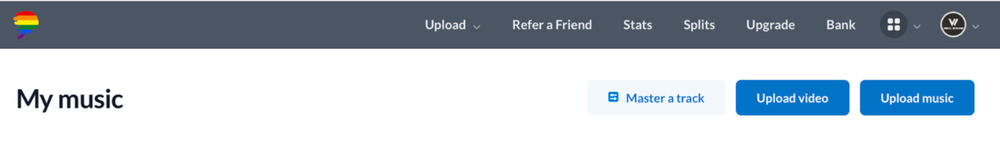
Tip: Make sure you are signed into the correct DistroKid account before starting.
2Step 2 of 11
Choose stores and the number of songs.
Leave the major streaming services selected unless you have a reason to exclude one. Choose 1 song (a single) when uploading one track.
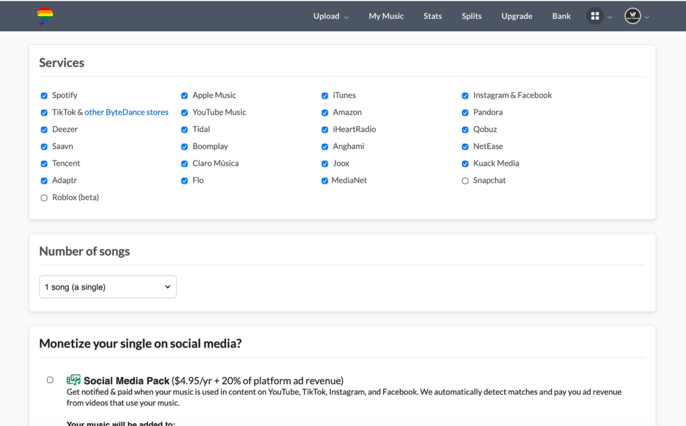
3Step 3 of 11
Answer the release-status questions.
Decide whether to add the Social Media Pack and tell DistroKid whether the song has been released before. Paid extras are optional, so read the description before selecting one.
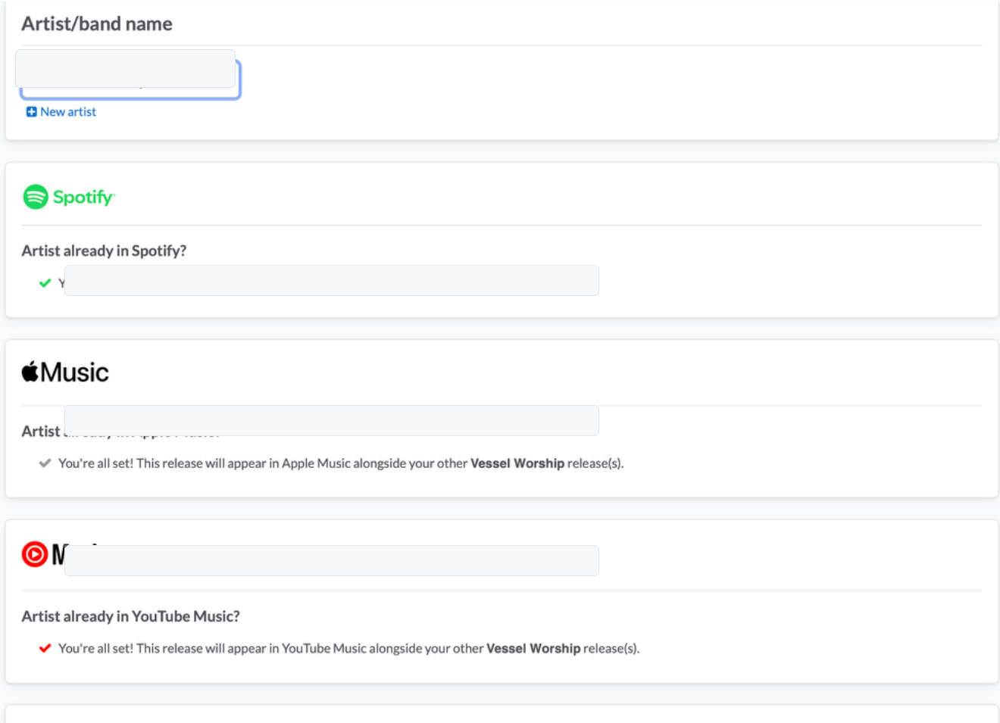
4Step 4 of 11
Confirm the artist and platform profiles.
Select the correct artist name. If the artist already has Spotify, Apple Music, or YouTube Music profiles, carefully confirm that DistroKid matched the correct pages.
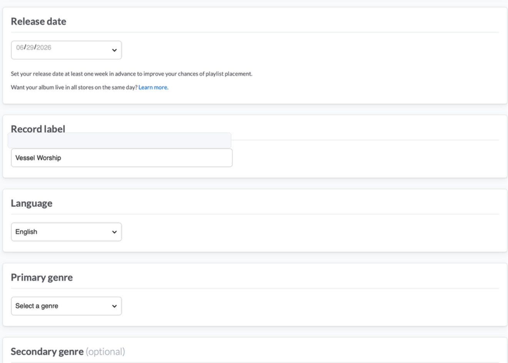
Double-check this section. A wrong artist match can send the release to another artist’s page.
5Step 5 of 11
Enter the release date, label, language, and genre.
Choose the release date and complete the basic release information. Independent artists can usually enter their artist or project name in the record-label field.
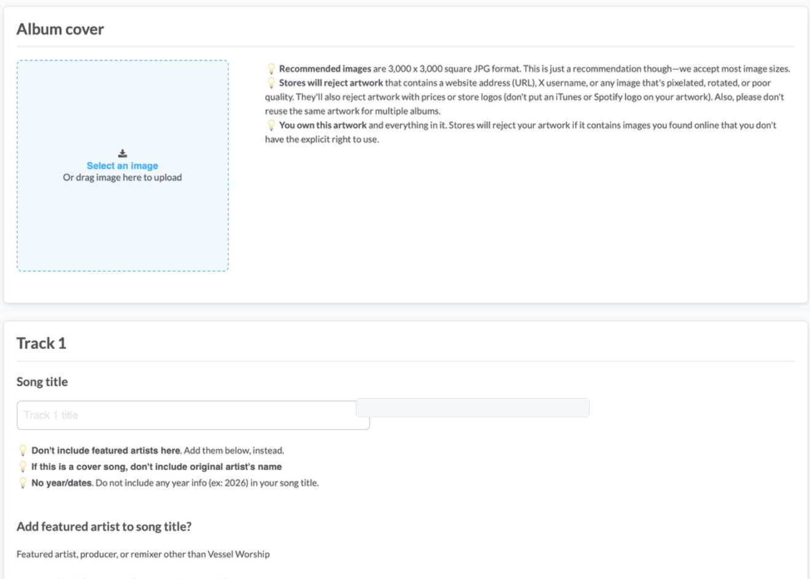
6Step 6 of 11
Upload the cover art and enter the song title.
Upload clear, square artwork that you own and have permission to use. Then enter the song title exactly as you want listeners to see it.
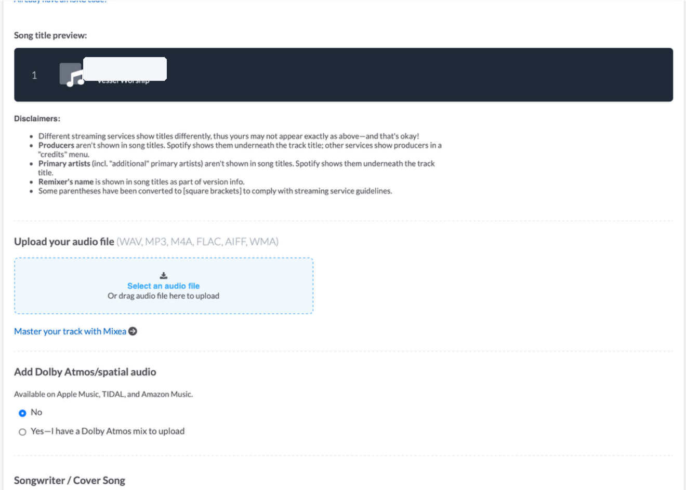
Before moving on: If the artwork looks blurry here, it will also look blurry in stores.
7Step 7 of 11
Upload the final audio file.
Select the final version of the song. Listen to that exact file before uploading so you do not accidentally submit an old mix or an unfinished export.
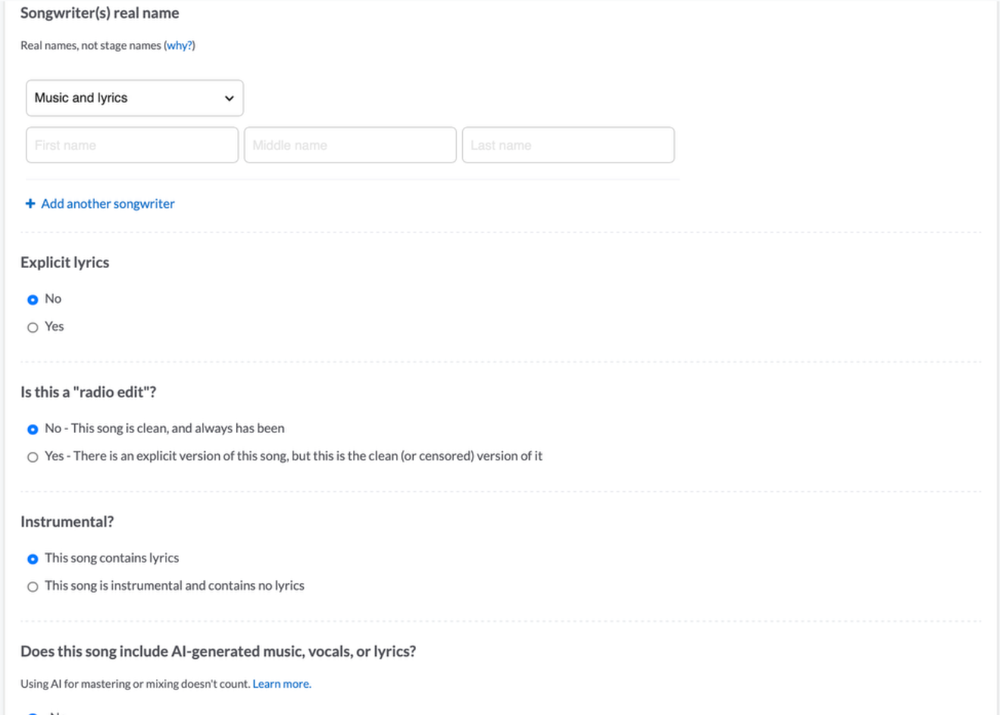
8Step 8 of 11
Add songwriter and content details.
Enter the songwriter’s legal name and answer the questions about explicit lyrics, radio edits, instrumentals, and AI-generated content honestly.
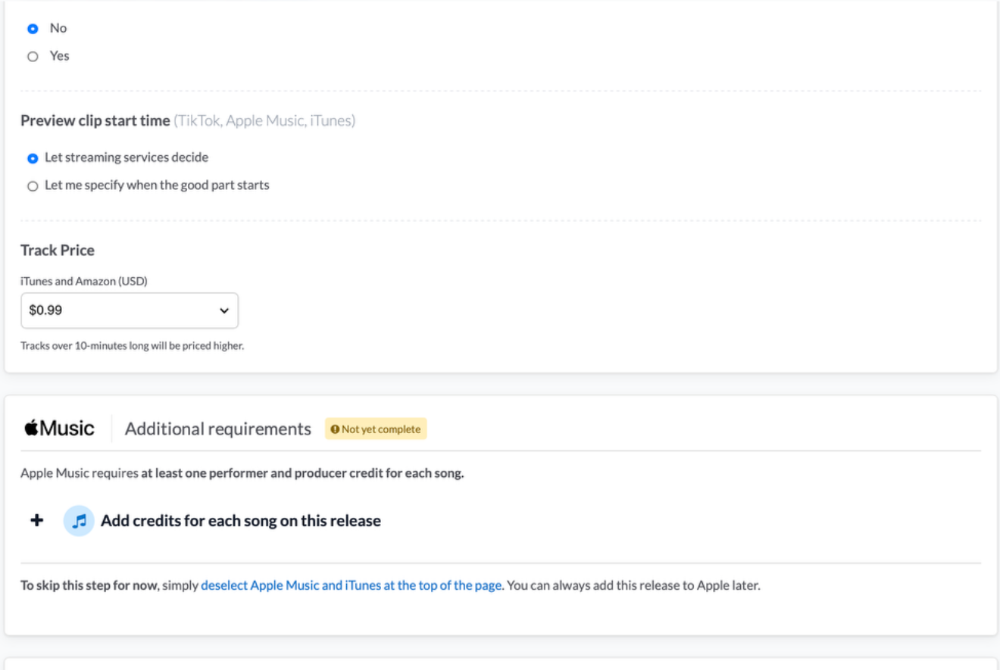
9Step 9 of 11
Choose the preview and complete store credits.
You can let the streaming services choose the preview clip or select its starting point. Complete any performer and producer credits required by the selected stores.
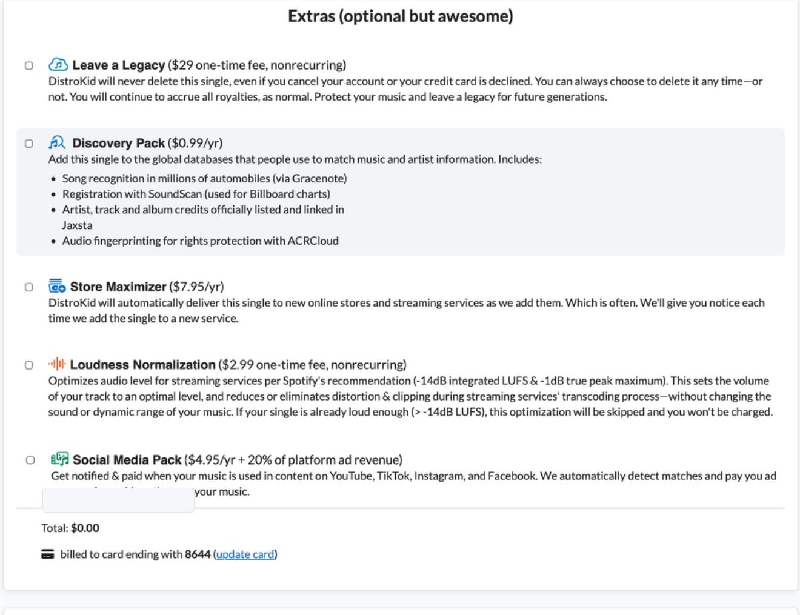
10Step 10 of 11
Review optional extras.
Services such as Leave a Legacy, Discovery Pack, Store Maximizer, and Social Media Pack cost extra. None of them are required to submit a basic release.
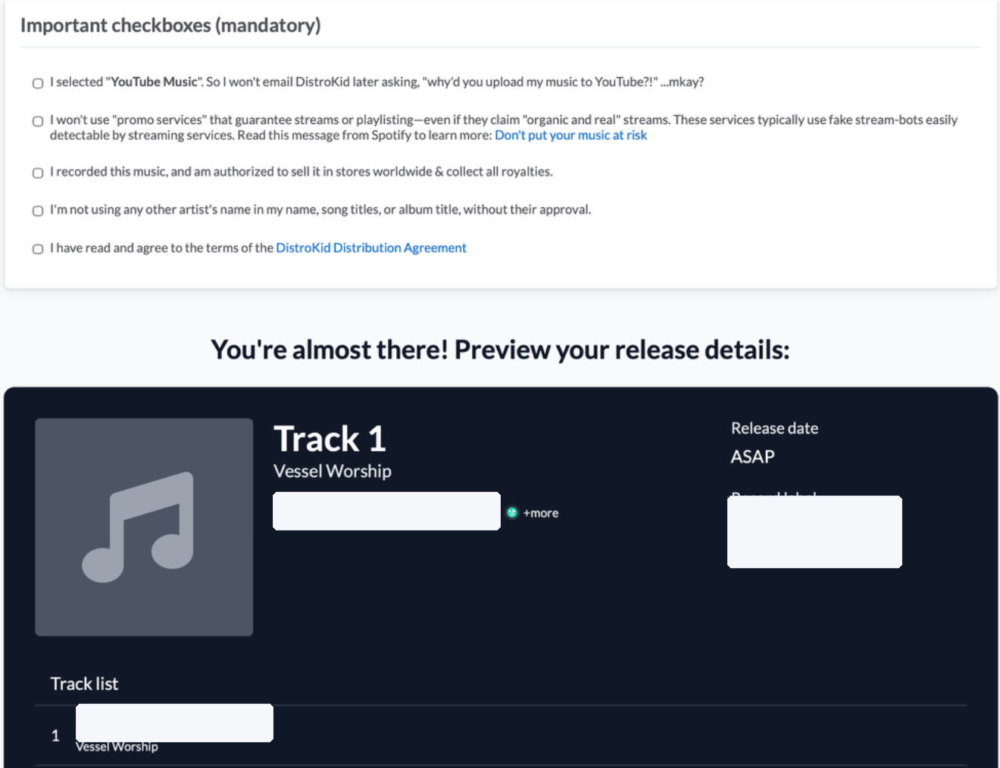
Tip: Do not select an extra just because it appears on the form. Read what it does and check whether the fee is one-time or recurring.
11Step 11 of 11
Accept the required statements, review, and submit.
Read each mandatory statement before checking it. Then review the artist name, song title, artwork, release date, label, stores, and audio one last time before submitting.
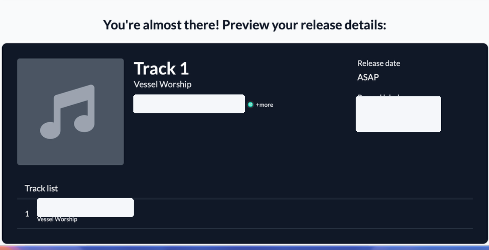
Congratulations! Once submitted, the release enters DistroKid’s review and delivery process.
Troubleshooting
Frequently asked questions
Why is my song not live immediately?
DistroKid and each selected store need time to review, process, and deliver the release. A delay does not automatically mean something went wrong.
Can I edit a release after submitting?
Some information can be changed, but corrections may take time and certain changes can be limited. It is easier to catch mistakes before submitting.
Why might artwork be rejected?
Common reasons include low resolution, poor quality, unauthorized images, URLs, social-media handles, or content that does not meet store requirements.
Do I need the optional extras?
No. They offer additional services, but a first-time artist can submit a basic release without selecting them.
Accessibility and design
Why the guide is built this way
The guide uses plain language, numbered steps, high contrast, consistent headings,
descriptive image text, and one main action per section. Real screenshots let users
compare the guide with the screen in front of them, while the responsive layout
allows the instructions to be read on a computer, tablet, or phone.